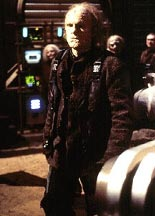
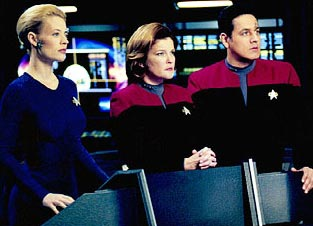
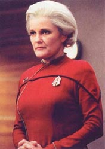
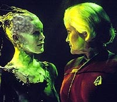
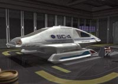
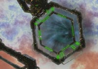
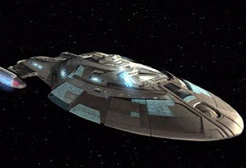
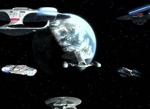

|
Janeway
vs. Primeira Diretriz, Final
 Embora
haja toda uma controvérsia em torno da postura da capitã Janeway
em relação ao principal protocolo da Frota, vemos que nem sempre
a violação dos regulamentos é nociva, já que pode salvar povos
e --eventualmente-- trazer a própria Voyager para casa. Com "Friendship
One" e "Endgame" chegamos à análise
final dessa temática na série. Embora
haja toda uma controvérsia em torno da postura da capitã Janeway
em relação ao principal protocolo da Frota, vemos que nem sempre
a violação dos regulamentos é nociva, já que pode salvar povos
e --eventualmente-- trazer a própria Voyager para casa. Com "Friendship
One" e "Endgame" chegamos à análise
final dessa temática na série.
Quando a USS Voyager finalmente estabelece contato entre dois
pontos com a Frota, a capitã recebe sua primeira missão oficial
em sete anos: localizar e recuperar a 'Friendship-1', uma sonda
lançada pela Terra em 2067 com uma mensagem de paz a outros
povos. Após cinco dias de buscas, a sonda é detectada em um
planeta escurecido por um inverno nuclear causado por radiação
de antimatéria.
Um grupo avançado é enviado à superfície e seus membros se
surpreendem ao encontrar um campo de mísseis em silos contendo
ogivas ativas. Quando encontram destroços da 'Friendship-1' e se
preparam para transportá-los a bordo do Delta Flyer, os oficiais
são cercados por alienígenas armados, deformados pela exposição
à radiação. Seu líder, Verin, se mostra bastante hostil ao
grupo e acusa-o de ser causador do sofrimento.
 Janeway é então
contactada e se dá conta de que seus tripulantes são mantidos
reféns e sob ameaça. Verin exige que toda a população seja
removida do planeta e realojada em um lugar melhor. Tuvok localiza
um mundo classe-M a 132 anos-luz de distância, mas determina que
levaria cerca de três anos para transportar os 5.500 habitantes.
Enquanto isso, na Enfermaria, Seven extrai nanossondas de sua
corrente sangüínea e o Doutor as reprograma para reparar os
danos causados pela radiação. Em seguida, a tripulação cura um
dos cientistas alienígenas e a capitã pede sua ajuda para
desenvolver o método do Doutor a fim de neutralizar toda a radiação
no planeta.
Cético, Verin fica terminantemente contra e mata um dos reféns.
Janeway então avisa que se prepara para a evacuação. Porém,
com a insistência de muitos na Voyager --inclusive o cientista
curado-- ela trabalha com Seven em um plano para causar uma reação
isolítica capaz de purificar a atmosfera. Em outras palavras, a
nossa Kathryn não só agiu sem consentimento, como o fez contra a
vontade do povo local.

Esse é um daqueles
momentos em que a quebra de regulamentos traz bons resultados e
ambas as partes ficam felizes. Foi mais ou menos dessa forma que a
série terminou.
 "Endgame",
o episódio que conclui a saga, começa no futuro, mais
precisamente no décimo aniversário do retorno da Voyager à
Terra após uma jornada de 23 anos. Kathryn Janeway é uma
almirante cheia de condecorações, mas não consegue esquecer os
fantasmas daqueles que não sobreviveram para comemorar o retorno
--entre eles, Chakotay e Seven of Nine.
Ela entra em contato não-oficial com um Klingon chamado Korath, a
quem concedeu favores políticos em troca de algo bastante específico.
 Como Korath não
cumpre sua parte no acordo, ela rouba o dispositivo em negociação
e parte em uma viagem no tempo-espaço, 26 anos no passado, no
quadrante Delta. Uma falha temporal forma-se na frente da Voyager
e a nave auxiliar futurísta da almirante emerge. Ela abre contato
e, sem ao menos apresentar-se, ordena que a capitã feche a
anomalia antes que os Klingons cheguem. Em seguida, diz que veio
para trazê-los para casa.
 A idéia
aqui não é estragar toda a surpresa do final do seriado, mas
apontar a conduta de Janeway (neste caso, a almirante) que,
abandonando completamente as regras, lança-se em uma missão com
o propósito de alterar significativamente quase 30 anos de história
universal. Em diálogo entre as duas 'Kathryns', a mais jovem
manifesta sua decepção em saber que se tornaria uma mulher tão
cínica.
 Entretanto, é
como dizem por aí, "entre mortos e feridos, salvam-se
todos". Esta última façanha ousada de Kathryn Janeway
repercute no retorno da USS Voyager ao quadrante Alfa, 16 anos
antes do previsto e, de quebra, abala o âmago da Coletividade
Borg. Quem sabe, com o retorno desta nave pouco convencional, a
Frota reflita sobre suas prioridades.

Pelo menos é isso que
se passa na cabeça dos chefões do franchise, que recentemente
lançaram a mais nova série de Jornada, Enterprise
--com premissa situada em uma época sem regras ou protocolos, em
que a sobrevivência e exploração são prioridade.

Daniel
Sasaki é co-editor do Trek
Brasilis
|